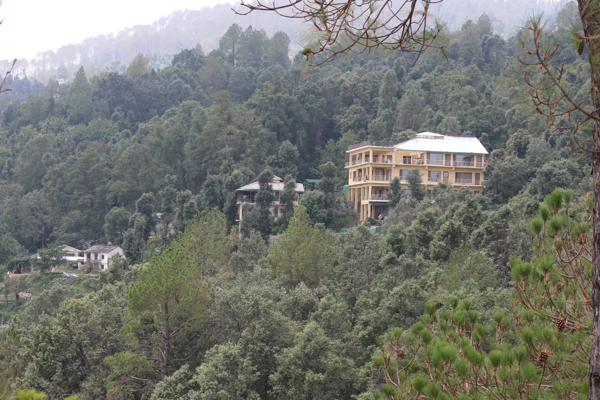
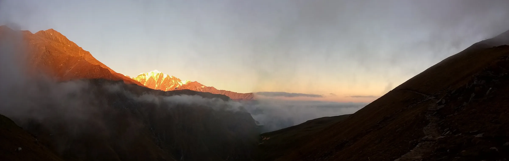
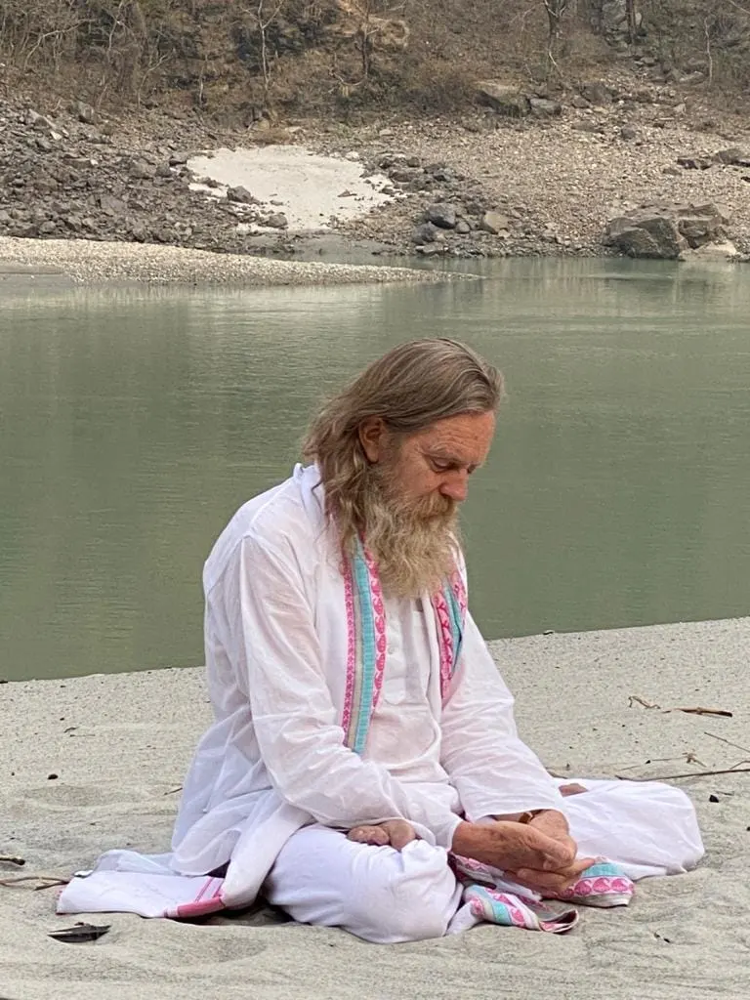
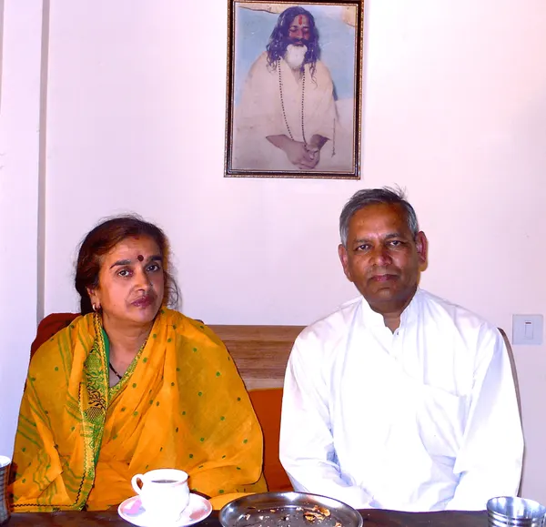
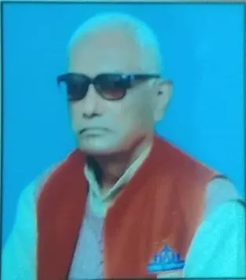
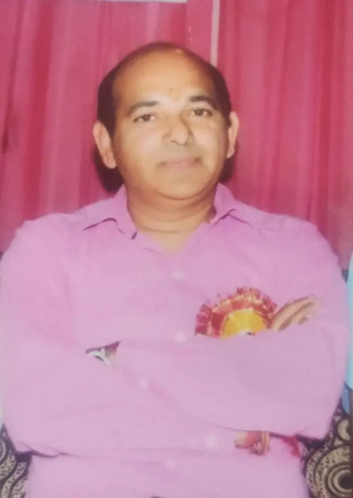

HomeAbout
अनामय आश्रमAn ashram built for the Veda
Since 2006, a Vedic community on the forested slopes of Kausani, facing the high Himalaya.

To make the Himalaya once again the home of a living Vedic culture
Shree Anamay Nyas is a trust registered in 2006 in the state of Uttarakhand for the training, development and support of Vedic tradition, knowledge and culture.
The ashram has stood on the Kausani Estate since November 2006. It has spread the ancient knowledge of the Vedic tradition in the Himalaya by training students from all over North India in every aspect of Vedic literature: the Vedas, Upavedas, Vedāṅgas and Upāṅgas.
The trust is led by Shri Ashutosh Urs. Students and teachers practise Transcendental Meditation and yoga every day. The ashram also has five acres of land for organic farming, a dairy farm, guest rooms and an Ayurvedic Panchakarma clinic.
- 40–50 Vedic students, 10–12 AcharyasResident in the Vedic Vidyapeeth
- 5 acres of organic land and a dairyGreenhouses, nethouses and our Goshala
- 25 guest rooms and a Panchakarma clinicAt the Anamay Vedic Retreat guest house
- Pure vegetarian, alcohol- and smoke-freeAcross the entire campus
From two rented rooms to a Himalayan ashram
- 2003
The Vidyapeeth begins
Even before the ashram existed, the Vedic school started in a rented place in Artola, near Jageshwar (Almora District). Life was simple, all in one or two rooms, with four first students. The youngest is a Yajurveda Acharya at the ashram today.
- 2006
Kausani
In November 2006 the school moved to its own land in Kausani, living in tents at first. For years it ran entirely on private donations.
- 2010
Seeking recognition
The ashram approached Maharishi Sandipani Rashtriya Vedvidya Pratishthan, run under the Ministry of Education, so that students could earn certified degrees.
- 2020
Part of Sandipani
From October 2020 the ashram became officially part of Sandipani, first for the Sāma Veda class.
- 2022
Ṛg and Yajur Veda join
From April 2022 the Ṛg Veda and Yajur Veda classes were also brought on board. An Atharva Veda section is now being considered.

Kausani, the land of the Kauśikas
Kausani takes its name from the Koshi river, named after the royal Rishi Kusha. His descendants, the Kauśikas, included Rishi Viśvāmitra, whose son Madhucchandas cognized the first hymns of the Ṛg Veda. Maharishi Mahesh Yogi taught that the qualities of a land shape the cognitions of the seers who live there.
Read “The Glory of Kausani” →Our trustees
The trust is guided by its founder and three trustees from the Kumaon region.

Ashutosh Urs
Founder & leader
Leads Shree Anamay Nyas. Disciple of Maharishi Mahesh Yogi.
His journey
Pradeep Kumar Lohani
Managing Trustee
Founder trustee. Advocate at the Uttarakhand High Court, Nainital.

Amar Nath Joshi
Trustee · Haldwani
Founder and manager of Shishu Bharti Inter College, Haldwani. Former manager of Ram Krishna Vidya Mandir, Laturia Ashram.

Neeraj Chhimwal
Trustee · Ramnagar
Trustee of Hanuman Dham, Chhoi. Former chairman of D. D. Chhimwal Memorial Public School and national president of the Leechi Growers Association of India.